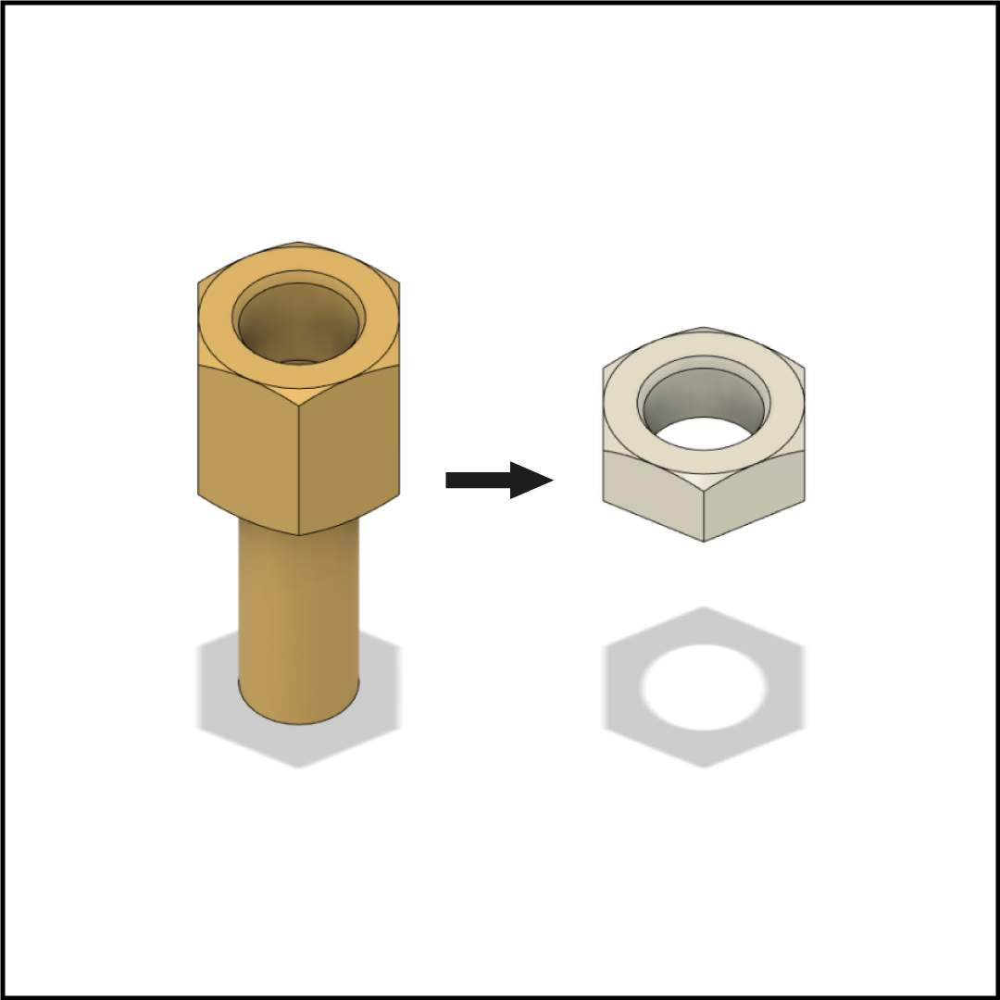

Novas posições internas para a bandeja permitindo compatibilidade maior de coolers para CPU e GPUs de slot 2.2 a 2.7.
Reversão da versão anterior. Ainda sujeito a alteração.
Necessário para funcionamento dos módulos inferiores com conexão rápida.
Alteração da rota do cabo e posição externa do conector C14 melhorando compatibilidade com modularidade de bandeja.
Consequência direta da reversão das dimensões. Retornando a casa dos 5 Litros.
Utilização de espaçadores de nylon de 2mm adicionados a montagem.
Produto revisado, muitas mudanças planejadas para modularidade interna.
CLIQUE AQUI PARA ASSISTIR
O aumento de tamanho é temporário e sua função é testar o espaço disponível e verificar os passos de montagem. É muito importante que o modelo seja fácil de montar e desmontar.
Botão foi movido para a parte frontal do chassi, permitindo que os módulos sejam encaixados sem necessidade de alterações nas rotas dos cabos.
Os espaçadores foram adicionados para dar espaço entre as backplates da placa mãe e da placa de vídeo. Esse espaço ajuda a remover uma bolsa de calor que antes ficava aprisionada em uma zona de ar turbulento.
Pequenas alterações na furação do encaixe dos fans, além da escariagem na chapa para uma montagem mais bem acabada no exterior do case.
Botão reduzido para poder se acomodar no novo local sem atrapalhar os cabos da fonte ou da GPU e para manter a estética minimalista.
Consequência direta do aumento das dimensões, com o aprimoramento do projeto essa mudança deve ser revertida.
Projeto enviado para pré produção em diferentes espessuras de alumínio e aço a fim de testar as resistências estruturais e peso de cada modelo.